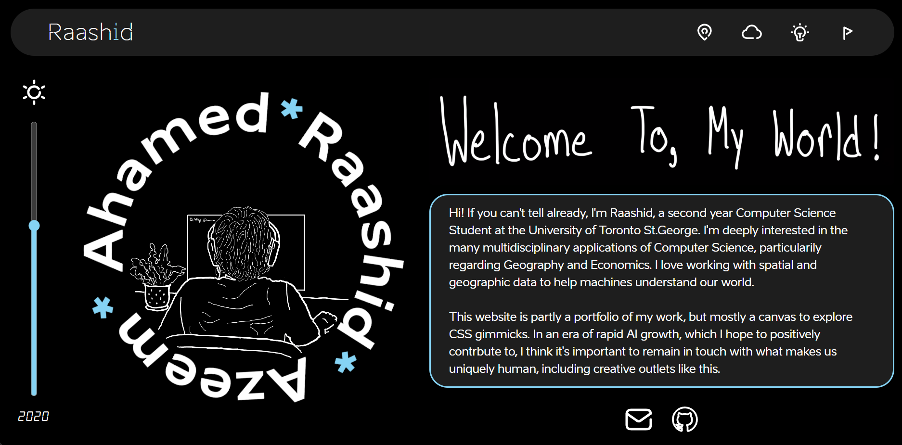

About This Site

If you're reading this, I've finally put an end to literally years of procastination and published this site. In this post I want to delineate the intentions behind the design choices I've made on here.
Firstly, I want to thank Estonia(yes the whole country) for being the inspiration behind the color scheme of the site, through their flag. Additionally, they have graciously made their entire digital design philosophy available to the public through the website Brand Estonia where the vast majority of the icons and media on this site are sourced. Honestly, the Estonian Tourism website is one of the first websites in a while that genuinely impressed me with its design, and I find Scandinavian design as a whole very aesthetically pleasing. I hope the little homage I've done here does it justice.
Most of my choices were made with the intent of seemin as human as possible. For instance, the hand written animation and drawings throughout the website were all made by me. While I don't think I'm a particularly skilled artist, I think including this imagery provides the site a human touch, imperfections and all. A similar sentiment is reflected in the pictures on the site, all of which were taken by me.
There are elements on this site that are (mostly) professional like the projects and experiences tabs, but I hope you also spend time on things like the places tab which are a little less serious. Most of my effort has gone towards those sections, and my hope is that they give you an idea of who I am beyond the resume.
Anyways, if any of you have any suggestions or questions about the website please don't hesitate to tell me, you know where to find me. Thanks for reading my first blog(?) post on this shiny new toy of mine - Raashid.